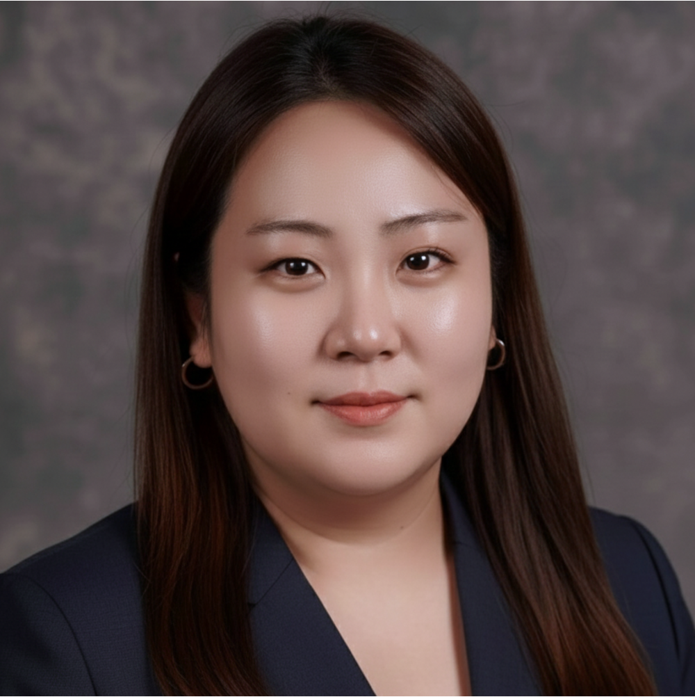

Aug 2026 – Present
Research Scientist
Michigan, USA

Research Scientist
I am a materials scientist and environmental/chemical engineer developing functional materials and electrochemical flow systems for water treatment, resource recovery, and sustainable energy. My research integrates rational material design, flow-reactor engineering, and advanced analytical chemistry—including high-resolution mass spectrometry—to control interfacial transport and chemical transformations in complex aqueous systems. By bridging molecular-level material synthesis with reactor-scale performance, I aim to create predictive, scalable technologies for emerging contaminants and clean energy infrastructure.
Research Scientist
Michigan, USA
Research Associate
University of Wyoming, Laramie, WY, USA
Postdoctoral Research Fellow
University of Michigan, Ann Arbor, MI, USA
Research Fellow
Gwangju Institute of Science and Technology, South Korea
Graduate Research Assistant
Gwangju Institute of Science and Technology, South Korea
Ph.D. in Environmental Science and Engineering
Gwangju Institute of Science and Technology, South Korea
M.S. in Environmental Science and Engineering
Gwangju Institute of Science and Technology, South Korea
B.S. in Chemistry & Applied Chemistry
Hanyang University, South Korea
GIST Young Scientist Fellowship
Gwangju Institute of Science and Technology
Young Investigator Award
Korean Society of Environmental Engineers
Government Scholarship
Ministry of Science and Technology, South Korea
Global University Project Scholarship
Gwangju Institute of Science and Technology
Student Presenter Award
249th ACS National Meeting and Exposition
Grand Prize
7th Capstone Design Fair, Hanyang University
Honor Scholarship
Hanyang University